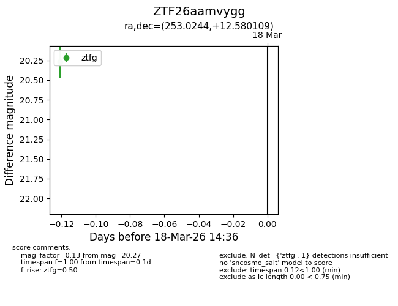
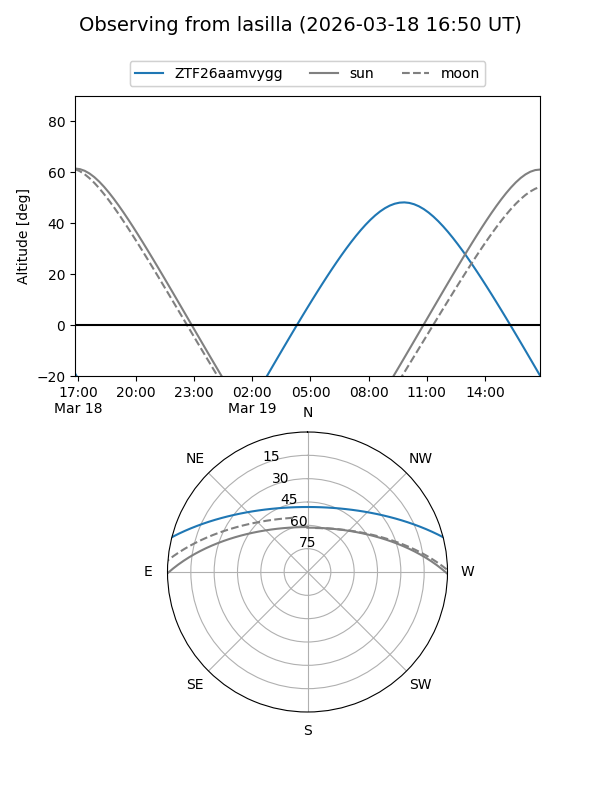
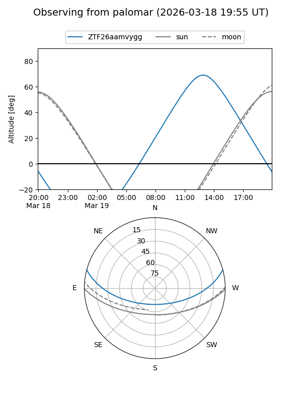

ZTF26aamvygg
Target ZTF26aamvygg at 2026-03-18 14:38
Aliases and brokers:
FINK: link
Lasair: link
ALeRCE: link
alt names
ZTF26aamvygg (ztf,fink_ztf)
Coordinates:
equatorial (ra, dec) = 253.0244,+12.58011
equatorial (HMS+DMS) = 16:52:05.86,+12:34:48.39
galactic (l, b) = (31.0672,+32.10406)
Flags:
Photometry:
last ztfg=20.27
1 ztfg detections
Lightcurve

Visibility


Additional plots